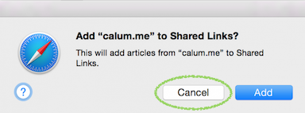

This version includes:
I hope you find it useful. If you have any problems or feedback, you can email me.
Whenever you use the Open in Application function in Safari 9 or later, you will see an alert like this:
To open the feed in your RSS application, you must click Cancel. This alert is generated by Safari and cannot currently be circumvented.